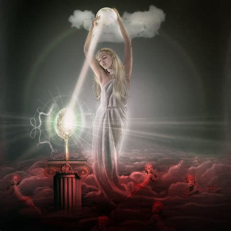
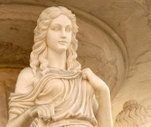

| Dieux | Statut | Rôle | Représentation |
|---|---|---|---|
| ABUNDANTIA | Secondaire | Déesse de l’abondance et de la prospérité | |
| AESCULAPE | Secondaire | Dieu de la santé et de la médecine | |
| APOLLO | Primaire | Dieu du Soleil, de la poésie, de la musique et des oracles | |
| AURORA | Secondaire | Déesse de l’aube |  |
| BACCHUS | Primaire | Dieu du vin | |
| BUBONA | Secondaire | Déesse du bétail | |
| CANDELIFERA | Secondaire | Déesse de l’accouchement | |
| CARMENTA | Secondaire | Déesse de l’accouchement et de la prophétie | |
| CERES | Primaire | Déesse de l’agriculture | |
| CLEMENTIA | Secondaire | Déesse du pardon et de la miséricorde | |
| CLOACINA | Secondaire | Déesse qui présidait aux égouts de Rome |  |
| CONCORDIA | Secondaire | Déesse de l’accord |  |
| CUPIDON | Primaire | Dieu de l’amour | |
| DEVERA | Secondaire | Déesse des sages-femmes et des femmes en travail | |
| DIANA | Primaire | Déesse de la chasse | |
| DISCORDIA | Secondaire | Déesse de la discorde | |
| EDESIA | Secondaire | Déesse de la nourriture qui présidait aux banquets | |
| EPONA | Secondaire | Dieu des chevaux | |
| FABULINUS | Secondaire | Dieu des enfants | |
| FAMA | Secondaire | Déesse de la célébrité et de la rumeur | |
| FAUNE | Primaire | Déesse des Animaux |  |
| FELICITAS | Secondaire | Déesse de la chance et du succès | |
| FIDES | Secondaire | Déesse de la loyauté | |
| FLORE | Primaire | Déesse des Fleurs et du Printemps | |
| FORTUNA | Primaire | Déesse de la Fortune | |
| HESPERA | Secondaire | Déesse du crépuscule | |
| HIPPONA | Secondaire | Déesse des chevaux | |
| HONOS | Secondaire | Dieu des honneurs militaires et de la chevalerie | |
| INVIDIA | Secondaire | Déesse de l’envie ou de la jalousie | |
| IRIS | Secondaire | Déesse de l’arc-en-ciel | |
| JANUS | Primaire | Dieu des portes, des débuts et des fins | |
| JUPITER | Primaire | Le roi des dieux et le dieu du ciel et de la pluie | |
| JUSTITIA | Secondaire | Déesse de la justice | |
| JUVENTAS | Secondaire | Déesse de la jeunesse | |
| LIBERTAS | Secondaire | Déesse de la liberté | |
| LIBITINA | Secondaire | Déesse de la mort, des cadavres et des funérailles | |
| LUNA | Secondaire | Déesse de la lune | |
| MARS | Primaire | Dieu de la guerre | |
| MERCURE | Primaire | Messager des Dieux et dieu du commerce et des finances | |
| MINERVA | Primaire | Déesse de la Sagesse, de la ville, de l’éducation, de la science et de la guerre | |
| MITHRAS | Secondaire | Dieu des soldats romains | |
| MUTA | Secondaire | Déesse du silence | |
| NECESSITA | Secondaire | Déesse du destin | |
| NEMESIS | Secondaire | Déesse de la vengeance et de la justice | |
| NEPTUNE | Primaire | Dieu de la mer | |
| OPIS | Secondaire | Déesse de la fertilité | |
| PAX | Secondaire | Déesse de la paix | |
| PIETAS | Secondaire | Déesse du devoir | |
| PLUTON | Primaire | Dieu du monde souterrain | |
| POMONA | Secondaire | Déesse des arbres fruitiers | |
| PORTUNES | Secondaire | Dieu des clés | |
| PROSPERINA | Secondaire | Déesse des céréales et reine des morts | |
| SANCUS | Secondaire | Dieu de la loyauté, de l’honnêteté et des serments | |
| SATURNE | Primaire | Dieu des moissons et de l’agriculture | |
| SOL INVICTUS | Secondaire | Dieu du soleil | |
| SOMNUS | Secondaire | Dieu du sommeil | |
| SORS | Secondaire | Dieu de la chance | |
| SPES | Secondaire | Déesse de l’espoir | |
| TEMPESTES | Secondaire | Déesse des tempêtes | |
| TRANQUILLITAS | Secondaire | Déesse de la paix et de la tranquillité | |
| TRIVIA | Secondaire | Déesse de la magie | |
| VENUS | Primaire | Déesse de l’amour et de la beauté |  |
| VERITAS | Secondaire | Déesse de la vertu et de la vérité | |
| VESTA | Primaire | Déesse du foyer | |
| VICTORIA | Secondaire | Déesse de la victoire | |
| VOLTURNUS | Secondaire | Dieu de l’eau | |
| VOLUPTAS | Secondaire | Déesse du plaisir | |
| VULCAN | Primaire | Dieu du feu, de la forge et des forgerons |
| Créatures | Description | Représentation |
|---|---|---|
| ACHLIS | Animale ressemblent à un élan, dont la lèvre supérieure tombe et ne possédant pas d'articulation aux pattes arrières | |
| ANPHISBENE | Serpent possédant une tête à chaque extrémité et pouvant se reconstituer en cas de coupure | |
| CALADRIUS | Oiseau blanc captant les maladies et en débarrasse son porteur | |
| DEMON | Etre spirituel bienveillant | |
| LARVE | Génie malfaisant venant sur terre pour tourmenter les vivants sous la forme de spectre | |
| LEMURE | Ame de défunt hantant les maisons | |
| STRYGE | Démon ailé, mi-femme, mi-oiseau enlevant les nouveaux nés et empoisonnant les enfants |


A website by Aubert